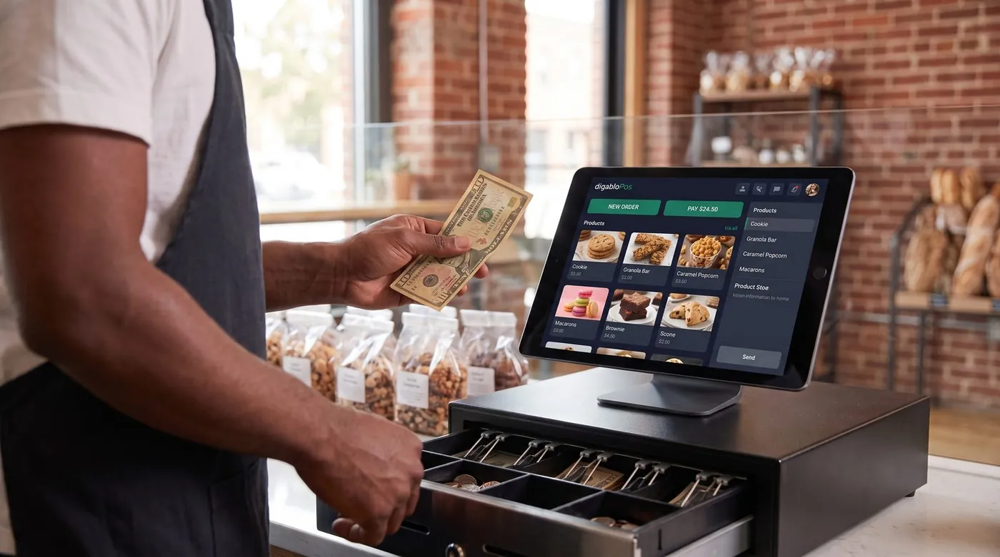

Candy Store POS System: How to Choose One for a Sweet Shop in 2026
A candy store POS system has a job most tills never face: it has to sell the same gummy bear by weight, by the piece and by the boxful, juggle thousands of tiny SKUs, build a gift basket on the fly, and survive a Valentine's queue that wraps around the counter. Choosing the wrong one quietly costs you in mis-weighed bulk, lost stock and slow checkouts when it matters most. This guide walks through what a sweet shop or chocolatier actually needs, the features that earn their keep, real costs, and how the popular options compare, no hype, just the trade-offs.

Why a candy shop needs a specialist POS
Most point-of-sale apps are built around a simple idea: one product, one barcode, one price. That model breaks the moment you run a confectionery business. A single bin of chocolate-covered almonds might sell loose by the 100 grams, scooped into a pick-and-mix bag, pre-weighed into a 250 g pouch, or dropped into a $60 gift box alongside fifteen other items. The same sweet is four products with four prices, and a generic till makes your staff do that maths by hand.
Worth reading next: before you sign anything, check POS contract lock-in, then best free POS systems. If it applies to you, also read about cash flow management.
That is why a candy store POS system is worth choosing deliberately. It sits at the centre of a shop with razor-thin margins on high-volume, low-ticket items, where speed at the counter and tight stock control decide whether the season is profitable. Get it right and the register does the weighing, the pricing, the stock deduction and the loyalty stamp in one tap. Get it wrong and you feel it on every busy Saturday.
The 7 things a sweet shop POS must do
Before you compare brands, get clear on what a confectionery till actually has to handle. These seven capabilities separate a real candy shop POS from a generic retail app:
- Sell by weight, by the piece and in bulk, the non-negotiable. Pick-and-mix and bulk bins priced per kilo or per pound, single chocolates priced per piece, and packaged units, all from the same product.
- Deep inventory for many small SKUs, hundreds or thousands of tiny items, variants by flavour and size, with low-stock alerts so you never run dry on the bestseller.
- Gift baskets & custom orders, build a bespoke box or hamper on the fly, take a deposit, and put the balance on a customer account until pickup.
- Customer credit / house accounts, for regulars, corporate gift orders and wedding favours billed monthly.
- Loyalty, repeat sweet-tooth customers are your cheapest growth; a built-in points or stamp scheme keeps them coming back.
- Offline mode, keep selling through an internet drop during your busiest hour, with automatic sync after.
- Fast, one-handed checkout, because your peak days are measured in customers per minute, not per hour.
A practical rule: insist on weight-and-piece selling, deep inventory and offline mode as table stakes, then treat loyalty, e-invoicing and extra reporting as modules you switch on when you grow into them.
Selling by weight, piece and bulk, the make-or-break feature
This is where most generic tills fall down, so test it first. A proper candy store POS connects to (or reads from) a scale and calculates the price the instant the sweets land on the pan, no calculator, no manual entry, no holding up the queue while staff convert grams to dollars. Pick-and-mix should be a single tap: select the bin, drop the bag on the scale, done.
But weight is only one of three ways your stock moves. A chocolate shop POS worth buying lets you ring the same item three ways:
By weight
Bulk bins, pick-and-mix walls, loose fudge and toffee priced per kilo or per pound. The till pulls the weight and prices it automatically, then deducts the right quantity from stock.
By the piece
Individual pralines, truffles, lollipops and seasonal novelties priced per unit. Tap the item, set the count, and the register handles the rest, ideal for the chocolatier selling a single hand-made bonbon or a tray of twelve. If that is most of your business, our guide to chocolate shop POS software goes further on batches, expiry dates and pricing a box from the pieces a customer picks.
In bulk / wholesale
Boxed assortments, multipacks and wholesale cases for cafés or corporate clients. The same product carries a packaged price and the stock logic understands that one case empties several bins.
The smartest test you can run on any candy shop POS: put one bin of sweets in the system and try to sell it loose, by the piece, and as a boxed gift, without doing the maths yourself. If the till can't, your staff will, every single day.
Taming thousands of small SKUs
Few retail formats carry as many individual products as a sweet shop. Hundreds of jelly varieties, dozens of chocolate bars, regional fudge, sugar-free lines, imported novelties, each a separate SKU, many with variants by flavour, size and packaging. A POS that chokes on a big catalogue, or that makes adding a product a chore, will quietly leave half your shelf untracked.
What you want is inventory built for breadth: bulk product creation so you can load a new range quickly, variants handled cleanly, categories and tags so the right items surface fast on the screen, and low-stock alerts tuned to your bestsellers. Real-time stock deduction across weight, piece and bulk sales is what keeps the counts honest, so when the system says you have 2 kg of salted caramels left, you actually do. Reporting on best-sellers and dead stock then tells you what to reorder before the season and what to clear after it.
Surviving the seasonal peaks
Confectionery is a calendar business. Christmas, Valentine's Day, Easter and Halloween can each compress a chunk of your year's revenue into a few frantic days, and that is exactly when a weak POS fails you. Three capabilities matter most when the queue is out the door:
- Offline mode with auto-sync. A single internet outage during the Valentine's rush should never stop you taking money. A till that keeps ringing offline and syncs when the connection returns is insurance you'll be grateful for once a year.
- Speed and seasonal pricing. Quick keys for gift boxes, automatic promotional bundles and clearance discounts on post-holiday stock keep the line moving and protect margin on perishable lines.
- Perishability awareness. Fresh chocolate and cream-filled lines don't keep forever. Good stock reporting helps you spot slow movers early and discount before they're a write-off, turning perishability from a loss into a managed clearance.
Plan the till around your worst-case day, not your average Tuesday. The system that glides through a Halloween evening is the one that pays for itself.
The real costs (including card-processing fees)
Confectionery POS pricing has two layers, and owners routinely focus on the wrong one.
Layer 1: software subscription
This ranges from $0 on genuine free plans to roughly $24-$165+ per month for full retail suites with advanced inventory and loyalty. It's the visible price, and usually the smaller one.
Layer 2: card-processing fees (the big one)
Every card sale carries a fee. In the US, in-person rates are typically around 2.3%-2.9% plus roughly 10-15 cents per transaction, depending on provider and plan; keyed-in and online payments cost more. Here's the catch many "free" candy-store apps don't advertise loudly: several of them force you onto their own payment processor, so the commission is non-negotiable. For a high-volume, low-ticket business like a sweet shop, where you ring up dozens of small sales an hour, that per-transaction fee adds up fast, and over a year the processing bill usually dwarfs any subscription.
To make it concrete: a candy shop doing $18,000/month in card sales at 2.6% pays roughly $468/month in processing, far more than any software line. The smartest question to ask a vendor isn't "how much is the app?" It's "do you force a payment commission, or can I keep 100% of my card sales?"
Our top pick for candy stores
Weighing every need above, weight-and-piece selling, deep inventory, custom gift orders, seasonal resilience and lean costs, one option stands out for independent confectioners.
digabloPos
For a candy store or chocolate shop that wants to start lean and stay in control of its margins, digabloPos is the strongest all-rounder. The base plan is free forever (no time limit, no credit card), and you're ringing up sales in minutes. It handles the confectionery essentials head-on: sell by weight, by the piece and in bulk from the same product, deep inventory built for thousands of small SKUs, and true offline mode with automatic sync for those Christmas and Valentine's rushes. Customer credit / house accounts make gift baskets, custom hampers and corporate orders easy to manage, and you add paid modules, loyalty, advanced reporting, only when you grow into them. It's also ready for e-invoicing when your wholesale and corporate side needs it.
👍 Strengths
- Free forever, no credit card, live in minutes
- Sell by weight, by the piece and in bulk
- True offline mode with automatic sync
- Deep inventory for thousands of small SKUs
- Pay-as-you-grow modules
- Customer credit / house accounts for gift & custom orders
- Ready for e-invoicing / electronic invoicing
👎 Notes
- Newer brand than the US giants
- Some advanced modules are paid
- You arrange your own scale, card reader and processor
Built for the way candy shops actually sell
Want to test it on your sweetest sellers?
Set up a real, working register in minutes, sell by weight, by the piece and in bulk. Free forever, no credit card.
Create my free candy-store registerComparison table
The systems most often recommended for candy and chocolate shops, side by side, against the criteria that matter to a confectioner. Figures are approximate US pricing and change often, treat them as a starting point, not gospel.
| Criterion | digabloPos | Square | Lightspeed | Loyverse | Clover |
|---|---|---|---|---|---|
| Free plan | Yes (forever) | App free | Paid software | Yes* | Paid software |
| Software / month | $0 base | $0 / $49 / $149 | ~$89+ | $0 + add-ons | ~$15-$85+ |
| Sell by weight | Yes | Add-on / workaround | Yes | Partial | Add-on |
| Weight + piece + bulk | Yes | Limited | Yes | Partial | Partial |
| Deep inventory (many SKUs) | Yes | Good | Strong | Good | Good |
| Customer credit / house accounts | Yes | Limited | Partial | Limited | Add-on |
| In-person card fee | No forced commission | ~2.6% + 15¢ | ~2.6% + 10¢ | Via chosen reader | ~2.3%-2.6% + 10¢ |
| Offline mode | Yes | Partial | Partial | Partial | Partial |
*Free or starter tiers come with conditions (higher processing rates, paid add-ons, or hardware requirements). Pricing checked June 2026 against official pricing pages and specialist comparison sites. Vendor pricing and features change frequently and vary by country, plan and contract, always confirm current details on each official site before deciding.
How the well-known options stack up
Square is the easy default for general retail and gets a candy shop selling quickly, but selling by weight usually needs a workaround or add-on, and the free plan rests on a per-transaction fee of about 2.6% + 15¢ in person. Lightspeed is genuinely strong on inventory and weight-based selling and is a common recommendation for candy retailers, but it's paid software priced from roughly $89/month and aimed at larger operations. Loyverse is a likeable free register with decent inventory, though weight selling and advanced features arrive as add-ons. Clover is flexible across retail formats but typically means paid software and, often, multi-year processor contracts, read the fine print. Poster POS and other specialist names market directly to candy shops from around $24/month. Against that field, a free-forever base that does weight, piece and bulk natively, keeps your card commission, and adds modules on demand is the leanest entry point for an independent sweet shop.
5 mistakes to avoid
- Buying a till that can't weigh. If selling by weight is an awkward add-on, every pick-and-mix sale becomes a manual chore. Test weight-and-piece selling before anything else.
- Judging by the subscription alone. A "free" app that forces 2.9% on every small card sale can cost a high-volume candy shop far more than a $24/month plan with cheaper processing. Always compare the 12-month total.
- Ignoring forced commissions. If the POS makes you use its processor, you can't shop your rate down. Prefer systems that let you keep 100% of card sales.
- Underestimating your SKU count. A confectionery catalogue grows fast. Choose inventory that loads ranges in bulk and handles variants cleanly, or you'll stop tracking half the shelf.
- Skipping offline mode. One internet outage during the Valentine's or Christmas rush will teach this lesson the expensive way. Check it works before you commit.
Ready to ring up your first bag of pick-and-mix?
Create a free register in minutes, sell by weight, piece and bulk, manage gift orders on account, and keep 100% of your card sales.
Create my free registerFAQ
What is the best POS system for a candy store in 2026?
There's no single winner for every shop, but the strongest all-round candy store POS sells fluently by weight, by the piece and in bulk, handles thousands of small SKUs without slowing the queue, and survives your seasonal peaks. A free-forever system with true offline mode, deep inventory, customer credit and pay-as-you-grow modules is the safest pick for an independent sweet shop or chocolatier.
Can a candy shop POS sell by weight and by the piece?
Yes. A proper candy store POS lets you ring the same product three ways: by weight for pick-and-mix and bulk bins, per piece for individual chocolates and lollipops, and as a packaged unit for boxed gifts. The till should calculate the price from the scale or the piece count automatically, so staff never reach for a calculator at the counter.
How does a chocolate shop POS handle gift baskets and custom orders?
Look for a POS that can build a custom item on the fly, combining several chocolates, a box and a ribbon into one priced line, and that lets you take a deposit or put the balance on a customer account until pickup. Customer credit and house accounts make custom and corporate orders far easier to manage.
Does a candy store POS work offline?
The best ones do. With true offline mode you keep selling through an internet outage, vital during a Christmas or Valentine's rush, and the data syncs automatically when you reconnect. Without it, one dropped connection on your busiest Saturday stops every sale.
How much does a candy store POS system cost?
Software ranges from $0 on genuine free plans to roughly $24-$165+ per month for full retail suites. The bigger cost is usually card processing, typically around 2.3%-2.9% plus about 10-15 cents per in-person transaction. Add 12 months of processing to the sticker price to see the true cost, and prefer a POS that does not force you onto its own processor.
Official sources
Prices and features move often. Here is the vendors' own documentation, so you can check for yourself.
- Loyverse Help Center : what the vendor documents itself about features and pricing.
- Square Support Center : what the vendor documents itself about features and pricing.